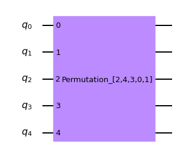

qiskit.circuit.library.Permutation¶
-
class
Permutation(num_qubits, pattern=None, seed=None)[sorgente]¶ An n_qubit circuit that permutes qubits.
Return an n_qubit permutation circuit implemented using SWAPs.
- Parametri
num_qubits (
int) – circuit width.pattern (
Optional[List[int]]) – permutation pattern. If None, permute randomly.seed (
Optional[int]) – random seed in case a random permutation is requested.
- Solleva
CircuitError – if permutation pattern is malformed.
- Reference Circuit:
- 
- Expanded Circuit:
-
__init__(num_qubits, pattern=None, seed=None)[sorgente]¶ Return an n_qubit permutation circuit implemented using SWAPs.
- Parametri
num_qubits (
int) – circuit width.pattern (
Optional[List[int]]) – permutation pattern. If None, permute randomly.seed (
Optional[int]) – random seed in case a random permutation is requested.
- Solleva
CircuitError – if permutation pattern is malformed.
- Reference Circuit:

- Expanded Circuit:
Methods
__init__(num_qubits[, pattern, seed])Return an n_qubit permutation circuit implemented using SWAPs.
add_calibration(gate, qubits, schedule[, params])Register a low-level, custom pulse definition for the given gate.
add_register(*regs)Add registers.
append(instruction[, qargs, cargs])Append one or more instructions to the end of the circuit, modifying the circuit in place.
assign_parameters(param_dict[, inplace])Assign parameters to new parameters or values.
barrier(*qargs)Apply
Barrier.bind_parameters(value_dict)Assign numeric parameters to values yielding a new circuit.
cast(value, _type)Best effort to cast value to type.
cbit_argument_conversion(clbit_representation)Converts several classical bit representations (such as indexes, range, etc.) into a list of classical bits.
ccx(control_qubit1, control_qubit2, target_qubit)Apply
CCXGate.ch(control_qubit, target_qubit[, label, …])Apply
CHGate.Return the current number of instances of this class, useful for auto naming.
Return the prefix to use for auto naming.
cnot(control_qubit, target_qubit[, label, …])Apply
CXGate.combine(rhs)Append rhs to self if self contains compatible registers.
compose(other[, qubits, clbits, front, inplace])Compose circuit with
othercircuit or instruction, optionally permuting wires.control([num_ctrl_qubits, label, ctrl_state])Control this circuit on
num_ctrl_qubitsqubits.copy([name])Copy the circuit.
Count each operation kind in the circuit.
cp(theta, control_qubit, target_qubit[, …])Apply
CPhaseGate.crx(theta, control_qubit, target_qubit[, …])Apply
CRXGate.cry(theta, control_qubit, target_qubit[, …])Apply
CRYGate.crz(theta, control_qubit, target_qubit[, …])Apply
CRZGate.cswap(control_qubit, target_qubit1, …[, …])Apply
CSwapGate.csx(control_qubit, target_qubit[, label, …])Apply
CSXGate.cu(theta, phi, lam, gamma, control_qubit, …)Apply
CUGate.cu1(theta, control_qubit, target_qubit[, …])Apply
CU1Gate.cu3(theta, phi, lam, control_qubit, target_qubit)Apply
CU3Gate.cx(control_qubit, target_qubit[, label, …])Apply
CXGate.cy(control_qubit, target_qubit[, label, …])Apply
CYGate.cz(control_qubit, target_qubit[, label, …])Apply
CZGate.dcx(qubit1, qubit2)Apply
DCXGate.Call a decomposition pass on this circuit, to decompose one level (shallow decompose).
delay(duration[, qarg, unit])Apply
Delay.depth()Return circuit depth (i.e., length of critical path).
diag_gate(diag, qubit)Deprecated version of QuantumCircuit.diagonal.
diagonal(diag, qubit)Attach a diagonal gate to a circuit.
draw([output, scale, filename, style, …])Draw the quantum circuit.
extend(rhs)Append QuantumCircuit to the right hand side if it contains compatible registers.
fredkin(control_qubit, target_qubit1, …)Apply
CSwapGate.from_qasm_file(path)Take in a QASM file and generate a QuantumCircuit object.
from_qasm_str(qasm_str)Take in a QASM string and generate a QuantumCircuit object.
h(qubit)Apply
HGate.hamiltonian(operator, time, qubits[, label])Apply hamiltonian evolution to to qubits.
has_register(register)Test if this circuit has the register r.
i(qubit)Apply
IGate.id(qubit)Apply
IGate.initialize(params, qubits)Apply initialize to circuit.
inverse()Invert (take adjoint of) this circuit.
iso(isometry, q_input, q_ancillas_for_output)Attach an arbitrary isometry from m to n qubits to a circuit.
isometry(isometry, q_input, …[, …])Attach an arbitrary isometry from m to n qubits to a circuit.
iswap(qubit1, qubit2)Apply
iSwapGate.mcmt(gate, control_qubits, target_qubits[, …])Apply a multi-control, multi-target using a generic gate.
mcp(lam, control_qubits, target_qubit)Apply
MCPhaseGate.mcrx(theta, q_controls, q_target[, …])Apply Multiple-Controlled X rotation gate
mcry(theta, q_controls, q_target, q_ancillae)Apply Multiple-Controlled Y rotation gate
mcrz(lam, q_controls, q_target[, …])Apply Multiple-Controlled Z rotation gate
mct(control_qubits, target_qubit[, …])Apply
MCXGate.mcu1(lam, control_qubits, target_qubit)Apply
MCU1Gate.mcx(control_qubits, target_qubit[, …])Apply
MCXGate.measure(qubit, cbit)Measure quantum bit into classical bit (tuples).
measure_active([inplace])Adds measurement to all non-idle qubits.
measure_all([inplace])Adds measurement to all qubits.
mirror()DEPRECATED: use circuit.reverse_ops().
ms(theta, qubits)Apply
MSGate.num_connected_components([unitary_only])How many non-entangled subcircuits can the circuit be factored to.
Return number of non-local gates (i.e.
Computes the number of tensor factors in the unitary (quantum) part of the circuit only.
Computes the number of tensor factors in the unitary (quantum) part of the circuit only.
p(theta, qubit)Apply
PhaseGate.power(power[, matrix_power])Raise this circuit to the power of
power.qasm([formatted, filename])Return OpenQASM string.
qbit_argument_conversion(qubit_representation)Converts several qubit representations (such as indexes, range, etc.) into a list of qubits.
qubit_duration(*qubits)Return the duration between the start and stop time of the first and last instructions, excluding delays, over the supplied qubits.
qubit_start_time(*qubits)Return the start time of the first instruction, excluding delays, over the supplied qubits.
qubit_stop_time(*qubits)Return the stop time of the last instruction, excluding delays, over the supplied qubits.
r(theta, phi, qubit)Apply
RGate.rcccx(control_qubit1, control_qubit2, …)Apply
RC3XGate.rccx(control_qubit1, control_qubit2, …)Apply
RCCXGate.remove_final_measurements([inplace])Removes final measurement on all qubits if they are present.
repeat(reps)Repeat this circuit
repstimes.reset(qubit)Reset q.
Return a circuit with the opposite order of wires.
Reverse the circuit by reversing the order of instructions.
rx(theta, qubit[, label])Apply
RXGate.rxx(theta, qubit1, qubit2)Apply
RXXGate.ry(theta, qubit[, label])Apply
RYGate.ryy(theta, qubit1, qubit2)Apply
RYYGate.rz(phi, qubit)Apply
RZGate.rzx(theta, qubit1, qubit2)Apply
RZXGate.rzz(theta, qubit1, qubit2)Apply
RZZGate.s(qubit)Apply
SGate.sdg(qubit)Apply
SdgGate.size()Returns total number of gate operations in circuit.
snapshot(label[, snapshot_type, qubits, params])Take a statevector snapshot of the internal simulator representation.
snapshot_density_matrix(label[, qubits])Take a density matrix snapshot of simulator state.
snapshot_expectation_value(label, op, qubits)Take a snapshot of expectation value <O> of an Operator.
snapshot_probabilities(label, qubits[, variance])Take a probability snapshot of the simulator state.
snapshot_stabilizer(label)Take a stabilizer snapshot of the simulator state.
snapshot_statevector(label)Take a statevector snapshot of the simulator state.
squ(unitary_matrix, qubit[, mode, …])Decompose an arbitrary 2*2 unitary into three rotation gates.
swap(qubit1, qubit2)Apply
SwapGate.sx(qubit)Apply
SXGate.sxdg(qubit)Apply
SXdgGate.t(qubit)Apply
TGate.tdg(qubit)Apply
TdgGate.to_gate([parameter_map, label])Create a Gate out of this circuit.
to_instruction([parameter_map])Create an Instruction out of this circuit.
toffoli(control_qubit1, control_qubit2, …)Apply
CCXGate.u(theta, phi, lam, qubit)Apply
UGate.u1(theta, qubit)Apply
U1Gate.u2(phi, lam, qubit)Apply
U2Gate.u3(theta, phi, lam, qubit)Apply
U3Gate.uc(gate_list, q_controls, q_target[, …])Attach a uniformly controlled gates (also called multiplexed gates) to a circuit.
ucrx(angle_list, q_controls, q_target)Attach a uniformly controlled (also called multiplexed) Rx rotation gate to a circuit.
ucry(angle_list, q_controls, q_target)Attach a uniformly controlled (also called multiplexed) Ry rotation gate to a circuit.
ucrz(angle_list, q_controls, q_target)Attach a uniformly controlled (also called multiplexed gates) Rz rotation gate to a circuit.
unitary(obj, qubits[, label])Apply unitary gate to q.
width()Return number of qubits plus clbits in circuit.
x(qubit[, label])Apply
XGate.y(qubit)Apply
YGate.z(qubit)Apply
ZGate.Attributes
Returns a list of ancilla bits in the order that the registers were added.
Return calibration dictionary.
Returns a list of classical bits in the order that the registers were added.
Return the circuit data (instructions and context).
extension_libReturn the global phase of the circuit in radians.
headerinstancesReturn the number of ancilla qubits.
Return number of classical bits.
Convenience function to get the number of parameter objects in the circuit.
Return number of qubits.
Convenience function to get the parameters defined in the parameter table.
prefixReturns a list of quantum bits in the order that the registers were added.
-
add_calibration(gate, qubits, schedule, params=None)¶ Register a low-level, custom pulse definition for the given gate.
- Parametri
- Solleva
Exception – if the gate is of type string and params is None.
-
add_register(*regs)¶ Add registers.
-
property
ancillas¶ Returns a list of ancilla bits in the order that the registers were added.
-
append(instruction, qargs=None, cargs=None)¶ Append one or more instructions to the end of the circuit, modifying the circuit in place. Expands qargs and cargs.
- Parametri
instruction (qiskit.circuit.Instruction) – Instruction instance to append
qargs (list(argument)) – qubits to attach instruction to
cargs (list(argument)) – clbits to attach instruction to
- Ritorna
a handle to the instruction that was just added
- Tipo di ritorno
- Solleva
CircuitError – if object passed is a subclass of Instruction
CircuitError – if object passed is neither subclass nor an instance of Instruction
-
assign_parameters(param_dict, inplace=False)¶ Assign parameters to new parameters or values.
The keys of the parameter dictionary must be Parameter instances in the current circuit. The values of the dictionary can either be numeric values or new parameter objects. The values can be assigned to the current circuit object or to a copy of it.
- Parametri
param_dict (dict) – A dictionary specifying the mapping from
current_parametertonew_parameter, wherenew_parametercan be a new parameter object or a numeric value.inplace (bool) – If False, a copy of the circuit with the bound parameters is returned. If True the circuit instance itself is modified.
- Solleva
CircuitError – If param_dict contains parameters not present in the circuit
- Ritorna
A copy of the circuit with bound parameters, if
inplaceis True, otherwise None.- Tipo di ritorno
Optional(QuantumCircuit)
Esempi
>>> from qiskit.circuit import QuantumCircuit, Parameter >>> circuit = QuantumCircuit(2) >>> params = [Parameter('A'), Parameter('B'), Parameter('C')] >>> circuit.ry(params[0], 0) >>> circuit.crx(params[1], 0, 1) >>> circuit.draw() ┌───────┐ q_0: |0>┤ Ry(A) ├────■──── └───────┘┌───┴───┐ q_1: |0>─────────┤ Rx(B) ├ └───────┘ >>> circuit.assign_parameters({params[0]: params[2]}, inplace=True) >>> circuit.draw() ┌───────┐ q_0: |0>┤ Ry(C) ├────■──── └───────┘┌───┴───┐ q_1: |0>─────────┤ Rx(B) ├ └───────┘ >>> bound_circuit = circuit.assign_parameters({params[1]: 1, params[2]: 2}) >>> bound_circuit.draw() ┌───────┐ q_0: |0>┤ Ry(2) ├────■──── └───────┘┌───┴───┐ q_1: |0>─────────┤ Rx(1) ├ └───────┘ >>> bound_circuit.parameters # this one has no free parameters anymore set() >>> circuit.parameters # the original one is still parameterized {Parameter(A), Parameter(C)}
-
barrier(*qargs)¶ Apply
Barrier. If qargs is None, applies to all.
-
bind_parameters(value_dict)¶ Assign numeric parameters to values yielding a new circuit.
To assign new Parameter objects or bind the values in-place, without yielding a new circuit, use the
assign_parameters()method.- Parametri
value_dict (dict) – {parameter: value, …}
- Solleva
CircuitError – If value_dict contains parameters not present in the circuit
TypeError – If value_dict contains a ParameterExpression in the values.
- Ritorna
copy of self with assignment substitution.
- Tipo di ritorno
-
property
calibrations¶ Return calibration dictionary.
- The custom pulse definition of a given gate is of the form
{“gate_name”: {(qubits, params): schedule}}
-
static
cast(value, _type)¶ Best effort to cast value to type. Otherwise, returns the value.
-
cbit_argument_conversion(clbit_representation)¶ Converts several classical bit representations (such as indexes, range, etc.) into a list of classical bits.
- Parametri
clbit_representation (Object) – representation to expand
- Ritorna
Where each tuple is a classical bit.
- Tipo di ritorno
List(tuple)
-
property
clbits¶ Returns a list of classical bits in the order that the registers were added.
-
classmethod
cls_instances()¶ Return the current number of instances of this class, useful for auto naming.
-
classmethod
cls_prefix()¶ Return the prefix to use for auto naming.
-
combine(rhs)¶ Append rhs to self if self contains compatible registers.
Two circuits are compatible if they contain the same registers or if they contain different registers with unique names. The returned circuit will contain all unique registers between both circuits.
Return self + rhs as a new object.
- Parametri
rhs (QuantumCircuit) – The quantum circuit to append to the right hand side.
- Ritorna
Returns a new QuantumCircuit object
- Tipo di ritorno
- Solleva
QiskitError – if the rhs circuit is not compatible
-
compose(other, qubits=None, clbits=None, front=False, inplace=False)¶ Compose circuit with
othercircuit or instruction, optionally permuting wires.othercan be narrower or of equal width toself.- Parametri
other (qiskit.circuit.Instruction or QuantumCircuit or BaseOperator) – (sub)circuit to compose onto self.
qubits (list[Qubit|int]) – qubits of self to compose onto.
clbits (list[Clbit|int]) – clbits of self to compose onto.
front (bool) – If True, front composition will be performed (not implemented yet).
inplace (bool) – If True, modify the object. Otherwise return composed circuit.
- Ritorna
the composed circuit (returns None if inplace==True).
- Tipo di ritorno
- Solleva
CircuitError – if composing on the front.
QiskitError – if
otheris wider or there are duplicate edge mappings.
Esempi
>>> lhs.compose(rhs, qubits=[3, 2], inplace=True)
┌───┐ ┌─────┐ ┌───┐ lqr_1_0: ───┤ H ├─── rqr_0: ──■──┤ Tdg ├ lqr_1_0: ───┤ H ├─────────────── ├───┤ ┌─┴─┐└─────┘ ├───┤ lqr_1_1: ───┤ X ├─── rqr_1: ┤ X ├─────── lqr_1_1: ───┤ X ├─────────────── ┌──┴───┴──┐ └───┘ ┌──┴───┴──┐┌───┐ lqr_1_2: ┤ U1(0.1) ├ + = lqr_1_2: ┤ U1(0.1) ├┤ X ├─────── └─────────┘ └─────────┘└─┬─┘┌─────┐ lqr_2_0: ─────■───── lqr_2_0: ─────■───────■──┤ Tdg ├ ┌─┴─┐ ┌─┴─┐ └─────┘ lqr_2_1: ───┤ X ├─── lqr_2_1: ───┤ X ├─────────────── └───┘ └───┘ lcr_0: 0 ═══════════ lcr_0: 0 ═══════════════════════ lcr_1: 0 ═══════════ lcr_1: 0 ═══════════════════════
-
control(num_ctrl_qubits=1, label=None, ctrl_state=None)¶ Control this circuit on
num_ctrl_qubitsqubits.- Parametri
num_ctrl_qubits (int) – The number of control qubits.
label (str) – An optional label to give the controlled operation for visualization.
ctrl_state (str or int) – The control state in decimal or as a bitstring (e.g. “111”). If None, use
2**num_ctrl_qubits - 1.
- Ritorna
The controlled version of this circuit.
- Tipo di ritorno
- Solleva
CircuitError – If the circuit contains a non-unitary operation and cannot be controlled.
-
copy(name=None)¶ Copy the circuit.
- Parametri
name (str) – name to be given to the copied circuit. If None, then the name stays the same
- Ritorna
a deepcopy of the current circuit, with the specified name
- Tipo di ritorno
-
count_ops()¶ Count each operation kind in the circuit.
- Ritorna
a breakdown of how many operations of each kind, sorted by amount.
- Tipo di ritorno
OrderedDict
-
cp(theta, control_qubit, target_qubit, label=None, ctrl_state=None)¶ Apply
CPhaseGate.
-
property
data¶ Return the circuit data (instructions and context).
- Ritorna
a list-like object containing the tuples for the circuit’s data.
Each tuple is in the format
(instruction, qargs, cargs), where instruction is an Instruction (or subclass) object, qargs is a list of Qubit objects, and cargs is a list of Clbit objects.- Tipo di ritorno
QuantumCircuitData
-
decompose()¶ Call a decomposition pass on this circuit, to decompose one level (shallow decompose).
- Ritorna
a circuit one level decomposed
- Tipo di ritorno
-
delay(duration, qarg=None, unit='dt')¶ Apply
Delay. If qarg is None, applies to all qubits. When applying to multiple qubits, delays with the same duration will be created.- Parametri
duration (int or float) – duration of the delay.
qarg (Object) – qubit argument to apply this delay.
unit (str) – unit of the duration. Supported units: “s”, “ms”, “us”, “ns”, “ps”, “dt”. Default is
dt, i.e. integer time unit depending on the target backend.
- Ritorna
the attached delay instruction.
- Tipo di ritorno
qiskit.Instruction
- Solleva
CircuitError – if arguments have bad format.
-
depth()¶ Return circuit depth (i.e., length of critical path). This does not include compiler or simulator directives such as “barrier” or “snapshot”.
- Ritorna
Depth of circuit.
- Tipo di ritorno
int
Notes
The circuit depth and the DAG depth need not be the same.
-
diag_gate(diag, qubit)¶ Deprecated version of QuantumCircuit.diagonal.
-
diagonal(diag, qubit)¶ Attach a diagonal gate to a circuit.
The decomposition is based on Theorem 7 given in «Synthesis of Quantum Logic Circuits» by Shende et al. (https://arxiv.org/pdf/quant-ph/0406176.pdf).
- Parametri
diag (list) – list of the 2^k diagonal entries (for a diagonal gate on k qubits). Must contain at least two entries
qubit (QuantumRegister|list) – list of k qubits the diagonal is acting on (the order of the qubits specifies the computational basis in which the diagonal gate is provided: the first element in diag acts on the state where all the qubits in q are in the state 0, the second entry acts on the state where all the qubits q[1],…,q[k-1] are in the state zero and q[0] is in the state 1, and so on)
- Ritorna
the diagonal gate which was attached to the circuit.
- Tipo di ritorno
- Solleva
QiskitError – if the list of the diagonal entries or the qubit list is in bad format; if the number of diagonal entries is not 2^k, where k denotes the number of qubits
-
draw(output=None, scale=None, filename=None, style=None, interactive=False, plot_barriers=True, reverse_bits=False, justify=None, vertical_compression='medium', idle_wires=True, with_layout=True, fold=None, ax=None, initial_state=False, cregbundle=True)¶ Draw the quantum circuit.
text: ASCII art TextDrawing that can be printed in the console.
latex: high-quality images compiled via LaTeX.
latex_source: raw uncompiled LaTeX output.
matplotlib: images with color rendered purely in Python.
- Parametri
output (str) – Select the output method to use for drawing the circuit. Valid choices are
text,latex,latex_source, ormpl. By default the “text” drawer is used unless a user config file has an alternative backend set as the default. If the output kwarg is set, that backend will always be used over the default in a user config file.scale (float) – scale of image to draw (shrink if < 1)
filename (str) – file path to save image to
style (dict or str) – dictionary of style or file name of style file. This option is only used by the
mploutput type. If a str is passed in that is the path to a json file which contains a dictionary of style, then that will be opened, parsed, and used as the input dict. See: Style Dict Doc for more information on the contents.interactive (bool) – when set true show the circuit in a new window (for mpl this depends on the matplotlib backend being used supporting this). Note when used with either the text or the latex_source output type this has no effect and will be silently ignored.
reverse_bits (bool) – When set to True, reverse the bit order inside registers for the output visualization.
plot_barriers (bool) – Enable/disable drawing barriers in the output circuit. Defaults to True.
justify (string) – Options are
left,rightornone. If anything else is supplied it defaults to left justified. It refers to where gates should be placed in the output circuit if there is an option.noneresults in each gate being placed in its own column.vertical_compression (string) –
high,mediumorlow. It merges the lines generated by thetextoutput so the drawing will take less vertical room. Default ismedium. Only used by thetextoutput, will be silently ignored otherwise.idle_wires (bool) – Include idle wires (wires with no circuit elements) in output visualization. Default is True.
with_layout (bool) – Include layout information, with labels on the physical layout. Default is True.
fold (int) – Sets pagination. It can be disabled using -1. In text, sets the length of the lines. This is useful when the drawing does not fit in the console. If None (default), it will try to guess the console width using
shutil. get_terminal_size(). However, if running in jupyter, the default line length is set to 80 characters. Inmplis the number of (visual) layers before folding. Default is 25.ax (matplotlib.axes.Axes) – An optional Axes object to be used for the visualization output. If none is specified, a new matplotlib Figure will be created and used. Additionally, if specified, there will be no returned Figure since it is redundant. This is only used when the
outputkwarg is set to use themplbackend. It will be silently ignored with all other outputs.initial_state (bool) – Optional. Adds
|0>in the beginning of the wire. Only used by thetext,latexandlatex_sourceoutputs. Default:False.cregbundle (bool) – Optional. If set True bundle classical registers. Not used by the
matplotliboutput. Default:True.
- Ritorna
PIL.Imageormatplotlib.figureorstrorTextDrawing:- PIL.Image (output=”latex”)
an in-memory representation of the image of the circuit diagram.
- matplotlib.figure.Figure (output=”mpl”)
a matplotlib figure object for the circuit diagram.
- str (output=”latex_source”)
The LaTeX source code for visualizing the circuit diagram.
- TextDrawing (output=”text”)
A drawing that can be printed as ASCII art.
- Solleva
VisualizationError – when an invalid output method is selected
ImportError – when the output methods require non-installed libraries
Style Dict Details
The style dict kwarg contains numerous options that define the style of the output circuit visualization. The style dict is only used by the
mploutput. The options available in the style dict are defined below:- Parametri
name (str) – The name of the style. The name can be set to “iqx”, “bw”, or “default”. This overrides the setting in the “~/.qiskit/settings.conf” file.
textcolor (str) – The color code to use for text. Defaults to “#000000”
subtextcolor (str) – The color code to use for subtext. Defaults to “#000000”
linecolor (str) – The color code to use for lines. Defaults to “#000000”
creglinecolor (str) – The color code to use for classical register lines. Defaults to “#778899”
gatetextcolor (str) – The color code to use for gate text. Defaults to “#000000”
gatefacecolor (str) – The color code to use for gates. Defaults to “#ffffff”
barrierfacecolor (str) – The color code to use for barriers. Defaults to “#bdbdbd”
backgroundcolor (str) – The color code to use for the background. Defaults to “#ffffff”
fontsize (int) – The font size to use for text. Defaults to 13.
subfontsize (int) – The font size to use for subtext. Defaults to 8.
displaytext (dict) –
A dictionary of the text to use for each element type in the output visualization. The default values are:
{ 'id': 'id', 'u0': 'U_0', 'u1': 'U_1', 'u2': 'U_2', 'u3': 'U_3', 'x': 'X', 'y': 'Y', 'z': 'Z', 'h': 'H', 's': 'S', 'sdg': 'S^\dagger', 't': 'T', 'tdg': 'T^\dagger', 'rx': 'R_x', 'ry': 'R_y', 'rz': 'R_z', 'reset': '\left|0\right\rangle' }
You must specify all the necessary values if using this. There is no provision for passing an incomplete dict in.
displaycolor (dict) –
The color codes to use for each circuit element in the form (gate_color, text_color). The default values are:
{ 'u1': ('#FA74A6', '#000000'), 'u2': ('#FA74A6', '#000000'), 'u3': ('#FA74A6', '#000000'), 'id': ('#05BAB6', '#000000'), 'x': ('#05BAB6', '#000000'), 'y': ('#05BAB6', '#000000'), 'z': ('#05BAB6', '#000000'), 'h': ('#6FA4FF', '#000000'), 'cx': ('#6FA4FF', '#000000'), 'cy': ('#6FA4FF', '#000000'), 'cz': ('#6FA4FF', '#000000'), 'swap': ('#6FA4FF', '#000000'), 's': ('#6FA4FF', '#000000'), 'sdg': ('#6FA4FF', '#000000'), 'dcx': ('#6FA4FF', '#000000'), 'iswap': ('#6FA4FF', '#000000'), 't': ('#BB8BFF', '#000000'), 'tdg': ('#BB8BFF', '#000000'), 'r': ('#BB8BFF', '#000000'), 'rx': ('#BB8BFF', '#000000'), 'ry': ('#BB8BFF', '#000000'), 'rz': ('#BB8BFF', '#000000'), 'rxx': ('#BB8BFF', '#000000'), 'ryy': ('#BB8BFF', '#000000'), 'rzx': ('#BB8BFF', '#000000'), 'reset': ('#000000', #FFFFFF'), 'target': ('#FFFFFF, '#FFFFFF'), 'measure': ('#000000', '#FFFFFF'), 'ccx': ('#BB8BFF', '#000000'), 'cdcx': ('#BB8BFF', '#000000'), 'ccdcx': ('#BB8BFF', '#000000'), 'cswap': ('#BB8BFF', '#000000'), 'ccswap': ('#BB8BFF', '#000000'), 'mcx': ('#BB8BFF', '#000000'), 'mcx_gray': ('#BB8BFF', '#000000), 'u': ('#BB8BFF', '#000000'), 'p': ('#BB8BFF', '#000000'), 'sx': ('#BB8BFF', '#000000'), 'sxdg': ('#BB8BFF', '#000000') }
Colors can also be entered without the text color, such as “u1”: “#FA74A6”, in which case the text color will always be “gatetextcolor”. The “displaycolor” dict can contain any number of elements from one to the entire dict above.
latexdrawerstyle (bool) – When set to True, enable LaTeX mode, which will draw gates like the latex output modes.
usepiformat (bool) – When set to True, use radians for output.
fold (int) – The number of circuit elements to fold the circuit at. Defaults to 20.
cregbundle (bool) – If set True, bundle classical registers
showindex (bool) – If set True, draw an index.
compress (bool) – If set True, draw a compressed circuit.
figwidth (int) – The maximum width (in inches) for the output figure.
dpi (int) – The DPI to use for the output image. Defaults to 150.
margin (list) – A list of margin values to adjust spacing around output image. Takes a list of 4 ints: [x left, x right, y bottom, y top].
creglinestyle (str) – The style of line to use for classical registers. Choices are “solid”, “doublet”, or any valid matplotlib linestyle kwarg value. Defaults to doublet
-
extend(rhs)¶ Append QuantumCircuit to the right hand side if it contains compatible registers.
Two circuits are compatible if they contain the same registers or if they contain different registers with unique names. The returned circuit will contain all unique registers between both circuits.
Modify and return self.
- Parametri
rhs (QuantumCircuit) – The quantum circuit to append to the right hand side.
- Ritorna
Returns this QuantumCircuit object (which has been modified)
- Tipo di ritorno
- Solleva
QiskitError – if the rhs circuit is not compatible
-
static
from_qasm_file(path)¶ Take in a QASM file and generate a QuantumCircuit object.
- Parametri
path (str) – Path to the file for a QASM program
- Ritorna
The QuantumCircuit object for the input QASM
- Tipo di ritorno
-
static
from_qasm_str(qasm_str)¶ Take in a QASM string and generate a QuantumCircuit object.
- Parametri
qasm_str (str) – A QASM program string
- Ritorna
The QuantumCircuit object for the input QASM
- Tipo di ritorno
-
property
global_phase¶ Return the global phase of the circuit in radians.
-
hamiltonian(operator, time, qubits, label=None)¶ Apply hamiltonian evolution to to qubits.
-
has_register(register)¶ Test if this circuit has the register r.
- Parametri
register (Register) – a quantum or classical register.
- Ritorna
True if the register is contained in this circuit.
- Tipo di ritorno
bool
-
initialize(params, qubits)¶ Apply initialize to circuit.
-
inverse()¶ Invert (take adjoint of) this circuit.
This is done by recursively inverting all gates.
- Ritorna
the inverted circuit
- Tipo di ritorno
- Solleva
CircuitError – if the circuit cannot be inverted.
Esempi
- input:
┌───┐
- q_0: ┤ H ├─────■──────
└───┘┌────┴─────┐
- q_1: ─────┤ RX(1.57) ├
└──────────┘
- output:
┌───┐
- q_0: ──────■──────┤ H ├
┌─────┴─────┐└───┘
- q_1: ┤ RX(-1.57) ├─────
└───────────┘
-
iso(isometry, q_input, q_ancillas_for_output, q_ancillas_zero=None, q_ancillas_dirty=None)¶ Attach an arbitrary isometry from m to n qubits to a circuit. In particular, this allows to attach arbitrary unitaries on n qubits (m=n) or to prepare any state on n qubits (m=0). The decomposition used here was introduced by Iten et al. in https://arxiv.org/abs/1501.06911.
- Parametri
isometry (ndarray) – an isometry from m to n qubits, i.e., a (complex) ndarray of dimension 2^n×2^m with orthonormal columns (given in the computational basis specified by the order of the ancillas and the input qubits, where the ancillas are considered to be more significant than the input qubits.).
q_input (QuantumRegister|list[Qubit]) – list of m qubits where the input to the isometry is fed in (empty list for state preparation).
q_ancillas_for_output (QuantumRegister|list[Qubit]) – list of n-m ancilla qubits that are used for the output of the isometry and which are assumed to start in the zero state. The qubits are listed with increasing significance.
q_ancillas_zero (QuantumRegister|list[Qubit]) – list of ancilla qubits which are assumed to start in the zero state. Default is q_ancillas_zero = None.
q_ancillas_dirty (QuantumRegister|list[Qubit]) – list of ancilla qubits which can start in an arbitrary state. Default is q_ancillas_dirty = None.
- Ritorna
the isometry is attached to the quantum circuit.
- Tipo di ritorno
- Solleva
QiskitError – if the array is not an isometry of the correct size corresponding to the provided number of qubits.
-
isometry(isometry, q_input, q_ancillas_for_output, q_ancillas_zero=None, q_ancillas_dirty=None)¶ Attach an arbitrary isometry from m to n qubits to a circuit. In particular, this allows to attach arbitrary unitaries on n qubits (m=n) or to prepare any state on n qubits (m=0). The decomposition used here was introduced by Iten et al. in https://arxiv.org/abs/1501.06911.
- Parametri
isometry (ndarray) – an isometry from m to n qubits, i.e., a (complex) ndarray of dimension 2^n×2^m with orthonormal columns (given in the computational basis specified by the order of the ancillas and the input qubits, where the ancillas are considered to be more significant than the input qubits.).
q_input (QuantumRegister|list[Qubit]) – list of m qubits where the input to the isometry is fed in (empty list for state preparation).
q_ancillas_for_output (QuantumRegister|list[Qubit]) – list of n-m ancilla qubits that are used for the output of the isometry and which are assumed to start in the zero state. The qubits are listed with increasing significance.
q_ancillas_zero (QuantumRegister|list[Qubit]) – list of ancilla qubits which are assumed to start in the zero state. Default is q_ancillas_zero = None.
q_ancillas_dirty (QuantumRegister|list[Qubit]) – list of ancilla qubits which can start in an arbitrary state. Default is q_ancillas_dirty = None.
- Ritorna
the isometry is attached to the quantum circuit.
- Tipo di ritorno
- Solleva
QiskitError – if the array is not an isometry of the correct size corresponding to the provided number of qubits.
-
mcmt(gate, control_qubits, target_qubits, ancilla_qubits=None, mode='noancilla', *, single_control_gate_fun=None, q_controls=None, q_ancillae=None, q_targets=None)¶ Apply a multi-control, multi-target using a generic gate.
This can also be used to implement a generic multi-control gate, as the target could also be of length 1.
-
mcp(lam, control_qubits, target_qubit)¶ Apply
MCPhaseGate.
-
mcrx(theta, q_controls, q_target, use_basis_gates=False)¶ Apply Multiple-Controlled X rotation gate
- Parametri
self (QuantumCircuit) – The QuantumCircuit object to apply the mcrx gate on.
theta (float) – angle theta
q_controls (list(Qubit)) – The list of control qubits
q_target (Qubit) – The target qubit
use_basis_gates (bool) – use p, u, cx
- Solleva
QiskitError – parameter errors
-
mcry(theta, q_controls, q_target, q_ancillae, mode=None, use_basis_gates=False)¶ Apply Multiple-Controlled Y rotation gate
- Parametri
self (QuantumCircuit) – The QuantumCircuit object to apply the mcry gate on.
theta (float) – angle theta
q_controls (list(Qubit)) – The list of control qubits
q_target (Qubit) – The target qubit
q_ancillae (QuantumRegister or tuple(QuantumRegister, int)) – The list of ancillary qubits.
mode (string) – The implementation mode to use
use_basis_gates (bool) – use p, u, cx
- Solleva
QiskitError – parameter errors
-
mcrz(lam, q_controls, q_target, use_basis_gates=False)¶ Apply Multiple-Controlled Z rotation gate
- Parametri
self (QuantumCircuit) – The QuantumCircuit object to apply the mcrz gate on.
lam (float) – angle lambda
q_controls (list(Qubit)) – The list of control qubits
q_target (Qubit) – The target qubit
use_basis_gates (bool) – use p, u, cx
- Solleva
QiskitError – parameter errors
-
mcu1(lam, control_qubits, target_qubit)¶ Apply
MCU1Gate.
-
mcx(control_qubits, target_qubit, ancilla_qubits=None, mode='noancilla')¶ Apply
MCXGate.The multi-cX gate can be implemented using different techniques, which use different numbers of ancilla qubits and have varying circuit depth. These modes are: - “no-ancilla”: Requires 0 ancilla qubits. - “recursion”: Requires 1 ancilla qubit if more than 4 controls are used, otherwise 0. - “v-chain”: Requires 2 less ancillas than the number of control qubits. - “v-chain-dirty”: Same as for the clean ancillas (but the circuit will be longer).
-
measure(qubit, cbit)¶ Measure quantum bit into classical bit (tuples).
- Parametri
qubit (QuantumRegister|list|tuple) – quantum register
cbit (ClassicalRegister|list|tuple) – classical register
- Ritorna
the attached measure instruction.
- Tipo di ritorno
qiskit.Instruction
- Solleva
CircuitError – if qubit is not in this circuit or bad format; if cbit is not in this circuit or not creg.
-
measure_active(inplace=True)¶ Adds measurement to all non-idle qubits. Creates a new ClassicalRegister with a size equal to the number of non-idle qubits being measured.
Returns a new circuit with measurements if inplace=False.
- Parametri
inplace (bool) – All measurements inplace or return new circuit.
- Ritorna
Returns circuit with measurements when inplace = False.
- Tipo di ritorno
-
measure_all(inplace=True)¶ Adds measurement to all qubits. Creates a new ClassicalRegister with a size equal to the number of qubits being measured.
Returns a new circuit with measurements if inplace=False.
- Parametri
inplace (bool) – All measurements inplace or return new circuit.
- Ritorna
Returns circuit with measurements when inplace = False.
- Tipo di ritorno
-
mirror()¶ DEPRECATED: use circuit.reverse_ops().
- Ritorna
the reversed circuit.
- Tipo di ritorno
-
property
num_ancillas¶ Return the number of ancilla qubits.
-
property
num_clbits¶ Return number of classical bits.
-
num_connected_components(unitary_only=False)¶ How many non-entangled subcircuits can the circuit be factored to.
- Parametri
unitary_only (bool) – Compute only unitary part of graph.
- Ritorna
Number of connected components in circuit.
- Tipo di ritorno
int
-
num_nonlocal_gates()¶ Return number of non-local gates (i.e. involving 2+ qubits).
Conditional nonlocal gates are also included.
-
property
num_parameters¶ Convenience function to get the number of parameter objects in the circuit.
-
property
num_qubits¶ Return number of qubits.
-
num_tensor_factors()¶ Computes the number of tensor factors in the unitary (quantum) part of the circuit only.
Notes
This is here for backwards compatibility, and will be removed in a future release of Qiskit. You should call num_unitary_factors instead.
-
num_unitary_factors()¶ Computes the number of tensor factors in the unitary (quantum) part of the circuit only.
-
property
parameters¶ Convenience function to get the parameters defined in the parameter table.
-
power(power, matrix_power=False)¶ Raise this circuit to the power of
power.If
poweris a positive integer andmatrix_powerisFalse, this implementation defaults to callingrepeat. Otherwise, if the circuit is unitary, the matrix is computed to calculate the matrix power.- Parametri
power (int) – The power to raise this circuit to.
matrix_power (bool) – If True, the circuit is converted to a matrix and then the matrix power is computed. If False, and
poweris a positive integer, the implementation defaults torepeat.
- Solleva
CircuitError – If the circuit needs to be converted to a gate but it is not unitary.
- Ritorna
A circuit implementing this circuit raised to the power of
power.- Tipo di ritorno
-
qasm(formatted=False, filename=None)¶ Return OpenQASM string.
- Parametri
formatted (bool) – Return formatted Qasm string.
filename (str) – Save Qasm to file with name “filename”.
- Ritorna
If formatted=False.
- Tipo di ritorno
str
- Solleva
ImportError – If pygments is not installed and
formattedisTrue.
-
qbit_argument_conversion(qubit_representation)¶ Converts several qubit representations (such as indexes, range, etc.) into a list of qubits.
- Parametri
qubit_representation (Object) – representation to expand
- Ritorna
Where each tuple is a qubit.
- Tipo di ritorno
List(tuple)
-
qubit_duration(*qubits)¶ Return the duration between the start and stop time of the first and last instructions, excluding delays, over the supplied qubits. Its time unit is
self.unit.- Parametri
*qubits – Qubits within
selfto include.- Tipo di ritorno
Union[int,float]- Ritorna
Return the duration between the first start and last stop time of non-delay instructions
-
qubit_start_time(*qubits)¶ Return the start time of the first instruction, excluding delays, over the supplied qubits. Its time unit is
self.unit.Return 0 if there are no instructions over qubits
- Parametri
*qubits – Qubits within
selfto include. Integers are allowed for qubits, indicatingof self.qubits. (indices) –
- Tipo di ritorno
Union[int,float]- Ritorna
Return the start time of the first instruction, excluding delays, over the qubits
- Solleva
CircuitError – if
selfis a not-yet scheduled circuit.
-
qubit_stop_time(*qubits)¶ Return the stop time of the last instruction, excluding delays, over the supplied qubits. Its time unit is
self.unit.Return 0 if there are no instructions over qubits
- Parametri
*qubits – Qubits within
selfto include. Integers are allowed for qubits, indicatingof self.qubits. (indices) –
- Tipo di ritorno
Union[int,float]- Ritorna
Return the stop time of the last instruction, excluding delays, over the qubits
- Solleva
CircuitError – if
selfis a not-yet scheduled circuit.
-
property
qubits¶ Returns a list of quantum bits in the order that the registers were added.
-
r(theta, phi, qubit)¶ Apply
RGate.
-
remove_final_measurements(inplace=True)¶ Removes final measurement on all qubits if they are present. Deletes the ClassicalRegister that was used to store the values from these measurements if it is idle.
Returns a new circuit without measurements if inplace=False.
- Parametri
inplace (bool) – All measurements removed inplace or return new circuit.
- Ritorna
Returns circuit with measurements removed when inplace = False.
- Tipo di ritorno
-
repeat(reps)¶ Repeat this circuit
repstimes.- Parametri
reps (int) – How often this circuit should be repeated.
- Ritorna
A circuit containing
repsrepetitions of this circuit.- Tipo di ritorno
-
reset(qubit)¶ Reset q.
-
reverse_bits()¶ Return a circuit with the opposite order of wires.
The circuit is «vertically» flipped. If a circuit is defined over multiple registers, the resulting circuit will have the same registers but with their order flipped.
This method is useful for converting a circuit written in little-endian convention to the big-endian equivalent, and vice versa.
- Ritorna
the circuit with reversed bit order.
- Tipo di ritorno
Esempi
- input:
┌───┐
- q_0: ┤ H ├─────■──────
└───┘┌────┴─────┐
- q_1: ─────┤ RX(1.57) ├
└──────────┘
- output:
┌──────────┐
- q_0: ─────┤ RX(1.57) ├
┌───┐└────┬─────┘
- q_1: ┤ H ├─────■──────
└───┘
-
reverse_ops()¶ Reverse the circuit by reversing the order of instructions.
This is done by recursively reversing all instructions. It does not invert (adjoint) any gate.
- Ritorna
the reversed circuit.
- Tipo di ritorno
Esempi
- input:
┌───┐
- q_0: ┤ H ├─────■──────
└───┘┌────┴─────┐
- q_1: ─────┤ RX(1.57) ├
└──────────┘
- output:
┌───┐
- q_0: ─────■──────┤ H ├
┌────┴─────┐└───┘
- q_1: ┤ RX(1.57) ├─────
└──────────┘
-
size()¶ Returns total number of gate operations in circuit.
- Ritorna
Total number of gate operations.
- Tipo di ritorno
int
-
snapshot(label, snapshot_type='statevector', qubits=None, params=None)¶ Take a statevector snapshot of the internal simulator representation. Works on all qubits, and prevents reordering (like barrier). :param label: a snapshot label to report the result :type label: str :param snapshot_type: the type of the snapshot. :type snapshot_type: str :param qubits: the qubits to apply snapshot to [Default: None]. :type qubits: list or None :param params: the parameters for snapshot_type [Default: None]. :type params: list or None
- Ritorna
with attached command
- Tipo di ritorno
- Solleva
ExtensionError – malformed command
-
snapshot_density_matrix(label, qubits=None)¶ Take a density matrix snapshot of simulator state.
- Parametri
label (str) – a snapshot label to report the result
qubits (list or None) – the qubits to apply snapshot to. If None all qubits will be snapshot [Default: None].
- Ritorna
with attached instruction.
- Tipo di ritorno
- Solleva
ExtensionError – if snapshot is invalid.
-
snapshot_expectation_value(label, op, qubits, single_shot=False, variance=False)¶ Take a snapshot of expectation value <O> of an Operator.
- Parametri
label (str) – a snapshot label to report the result
op (Operator) – operator to snapshot
qubits (list) – the qubits to snapshot.
single_shot (bool) – return list for each shot rather than average [Default: False]
variance (bool) – compute variance of values [Default: False]
- Ritorna
with attached instruction.
- Tipo di ritorno
- Solleva
ExtensionError – if snapshot is invalid.
-
snapshot_probabilities(label, qubits, variance=False)¶ Take a probability snapshot of the simulator state.
- Parametri
label (str) – a snapshot label to report the result
qubits (list) – the qubits to snapshot.
variance (bool) – compute variance of probabilities [Default: False]
- Ritorna
with attached instruction.
- Tipo di ritorno
- Solleva
ExtensionError – if snapshot is invalid.
-
snapshot_stabilizer(label)¶ Take a stabilizer snapshot of the simulator state.
- Parametri
label (str) – a snapshot label to report the result.
- Ritorna
with attached instruction.
- Tipo di ritorno
- Solleva
ExtensionError – if snapshot is invalid.
- Additional Information:
This snapshot is always performed on all qubits in a circuit. The number of qubits parameter specifies the size of the instruction as a barrier and should be set to the number of qubits in the circuit.
-
snapshot_statevector(label)¶ Take a statevector snapshot of the simulator state.
- Parametri
label (str) – a snapshot label to report the result.
- Ritorna
with attached instruction.
- Tipo di ritorno
- Solleva
ExtensionError – if snapshot is invalid.
- Additional Information:
This snapshot is always performed on all qubits in a circuit. The number of qubits parameter specifies the size of the instruction as a barrier and should be set to the number of qubits in the circuit.
-
squ(unitary_matrix, qubit, mode='ZYZ', up_to_diagonal=False, *, u=None)¶ Decompose an arbitrary 2*2 unitary into three rotation gates.
Note that the decomposition is up to a global phase shift. (This is a well known decomposition, which can be found for example in Nielsen and Chuang’s book «Quantum computation and quantum information».)
- Parametri
unitary_matrix (ndarray) – 2*2 unitary (given as a (complex) ndarray).
qubit (QuantumRegister | Qubit) – The qubit which the gate is acting on.
mode (string) – determines the used decomposition by providing the rotation axes. The allowed modes are: «ZYZ» (default)
up_to_diagonal (bool) – if set to True, the single-qubit unitary is decomposed up to a diagonal matrix, i.e. a unitary u” is implemented such that there exists a 2*2 diagonal gate d with u = d.dot(u”)
u (ndarray) – Deprecated, use
unitary_matrixinstead.
- Ritorna
The single-qubit unitary instruction attached to the circuit.
- Tipo di ritorno
- Solleva
QiskitError – if the format is wrong; if the array u is not unitary
-
to_gate(parameter_map=None, label=None)¶ Create a Gate out of this circuit.
- Parametri
parameter_map (dict) – For parameterized circuits, a mapping from parameters in the circuit to parameters to be used in the gate. If None, existing circuit parameters will also parameterize the gate.
label (str) – Optional gate label.
- Ritorna
a composite gate encapsulating this circuit (can be decomposed back)
- Tipo di ritorno
-
to_instruction(parameter_map=None)¶ Create an Instruction out of this circuit.
- Parametri
parameter_map (dict) – For parameterized circuits, a mapping from parameters in the circuit to parameters to be used in the instruction. If None, existing circuit parameters will also parameterize the instruction.
- Ritorna
a composite instruction encapsulating this circuit (can be decomposed back)
- Tipo di ritorno
-
uc(gate_list, q_controls, q_target, up_to_diagonal=False)¶ Attach a uniformly controlled gates (also called multiplexed gates) to a circuit.
The decomposition was introduced by Bergholm et al. in https://arxiv.org/pdf/quant-ph/0410066.pdf.
- Parametri
gate_list (list[ndarray]) – list of two qubit unitaries [U_0,…,U_{2^k-1}], where each single-qubit unitary U_i is a given as a 2*2 array
q_controls (QuantumRegister|list[(QuantumRegister,int)]) – list of k control qubits. The qubits are ordered according to their significance in the computational basis. For example if q_controls=[q[1],q[2]] (with q = QuantumRegister(2)), the unitary U_0 is performed if q[1] and q[2] are in the state zero, U_1 is performed if q[2] is in the state zero and q[1] is in the state one, and so on
q_target (QuantumRegister|(QuantumRegister,int)) – target qubit, where we act on with the single-qubit gates.
up_to_diagonal (bool) – If set to True, the uniformly controlled gate is decomposed up to a diagonal gate, i.e. a unitary u” is implemented such that there exists a diagonal gate d with u = d.dot(u”), where the unitary u describes the uniformly controlled gate
- Ritorna
the uniformly controlled gate is attached to the circuit.
- Tipo di ritorno
- Solleva
QiskitError – if the list number of control qubits does not correspond to the provided number of single-qubit unitaries; if an input is of the wrong type
-
ucrx(angle_list, q_controls, q_target)¶ Attach a uniformly controlled (also called multiplexed) Rx rotation gate to a circuit.
The decomposition is base on https://arxiv.org/pdf/quant-ph/0406176.pdf by Shende et al.
- Parametri
angle_list (list) – list of (real) rotation angles \([a_0,...,a_{2^k-1}]\)
q_controls (QuantumRegister|list) – list of k control qubits (or empty list if no controls). The control qubits are ordered according to their significance in increasing order: For example if
q_controls=[q[0],q[1]](withq = QuantumRegister(2)), the rotationRx(a_0)is performed ifq[0]andq[1]are in the state zero, the rotationRx(a_1)is performed ifq[0]is in the state one andq[1]is in the state zero, and so onq_target (QuantumRegister|Qubit) – target qubit, where we act on with the single-qubit rotation gates
- Ritorna
the uniformly controlled rotation gate is attached to the circuit.
- Tipo di ritorno
- Solleva
QiskitError – if the list number of control qubits does not correspond to the provided number of single-qubit unitaries; if an input is of the wrong type
-
ucry(angle_list, q_controls, q_target)¶ Attach a uniformly controlled (also called multiplexed) Ry rotation gate to a circuit.
The decomposition is base on https://arxiv.org/pdf/quant-ph/0406176.pdf by Shende et al.
- Parametri
angle_list (list[numbers) – list of (real) rotation angles \([a_0,...,a_{2^k-1}]\)
q_controls (QuantumRegister|list[Qubit]) – list of k control qubits (or empty list if no controls). The control qubits are ordered according to their significance in increasing order: For example if
q_controls=[q[0],q[1]](withq = QuantumRegister(2)), the rotationRy(a_0)is performed ifq[0]andq[1]are in the state zero, the rotationRy(a_1)is performed ifq[0]is in the state one andq[1]is in the state zero, and so onq_target (QuantumRegister|Qubit) – target qubit, where we act on with the single-qubit rotation gates
- Ritorna
the uniformly controlled rotation gate is attached to the circuit.
- Tipo di ritorno
- Solleva
QiskitError – if the list number of control qubits does not correspond to the provided number of single-qubit unitaries; if an input is of the wrong type
-
ucrz(angle_list, q_controls, q_target)¶ Attach a uniformly controlled (also called multiplexed gates) Rz rotation gate to a circuit.
The decomposition is base on https://arxiv.org/pdf/quant-ph/0406176.pdf by Shende et al.
- Parametri
angle_list (list[numbers) – list of (real) rotation angles [a_0,…,a_{2^k-1}]
q_controls (QuantumRegister|list[Qubit]) – list of k control qubits (or empty list if no controls). The control qubits are ordered according to their significance in increasing order: For example if q_controls=[q[1],q[2]] (with q = QuantumRegister(2)), the rotation Rz(a_0)is performed if q[1] and q[2] are in the state zero, the rotation Rz(a_1) is performed if q[1] is in the state one and q[2] is in the state zero, and so on
q_target (QuantumRegister|Qubit) – target qubit, where we act on with the single-qubit rotation gates
- Ritorna
the uniformly controlled rotation gate is attached to the circuit.
- Tipo di ritorno
- Solleva
QiskitError – if the list number of control qubits does not correspond to the provided number of single-qubit unitaries; if an input is of the wrong type
-
unitary(obj, qubits, label=None)¶ Apply unitary gate to q.
-
width()¶ Return number of qubits plus clbits in circuit.
- Ritorna
Width of circuit.
- Tipo di ritorno
int